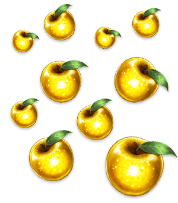

舉辦主線關卡第2部 第5章「Lostbelt No.5 星間都市山脈 奧林帕斯 擊落神之日」的開幕前夕宣傳活動！
◆舉辦期間◆
2020年4月2日(四) 17:00～4月13日(一) 2:59

為了記念主線關卡第2部 第5章「Lostbelt No.5 星間都市山脈 奧林帕斯 擊落神之日」開幕，實施登入獎勵。
在下述期間中合計10天內登入(1天算1次)的話，贈送最多黃金果實10個！
◆舉辦期間◆
2020年4月2日(四) 17:00～4月13日(一) 2:59
※在舉辦期間內合計10天內登入的話，可領取所有的登入獎勵。
◆贈送對象◆
2020年4月12日(日) 2:59前通過「特異點F 炎上汙染都市 冬木」的御主對象
※在上述時間前，在管理室(ターミナル)畫面的關卡橫幅必須要有「CLEAR」的文字顯示。
| 登入次數 | 贈送內容 | |
|---|---|---|
| 第1次 |

|
黃金果實 1個 |
| 第2次 |
|
黃金果實 1個 |
| 第3次 |
|
黃金果實 1個 |
| 第4次 |
|
黃金果實 1個 |
| 第5次 |
|
黃金果實 1個 |
| 第6次 |
|
黃金果實 1個 |
| 第7次 |
|
黃金果實 1個 |
| 第8次 |
|
黃金果實 1個 |
| 第9次 |
|
黃金果實 1個 |
| 第10次 |
|
黃金果實 1個 |
※第1次的登入獎勵在4月2日(四) 17:00以後配發。 ※之後的登入獎勵在各日3:00配發。 ※合計能領取10次，但根據成為贈送對象的時間點，可能無法到此上限。
關於主線關卡第2部 第5章「Lostbelt No.5 星間都市山脈 奧林帕斯 擊落神之日」和『「Lostbelt No.5 神代巨神海洋 亞特蘭提斯 擊落神之日」通過聲援宣傳活動』的詳情，請自下述橫幅確認。
■「Lostbelt No.5 星間都市山脈 奧林帕斯 擊落神之日」詳細情報

■「Lostbelt No.5 神代巨神海洋 亞特蘭提斯 擊落神之日」通過聲援宣傳活動詳細情報